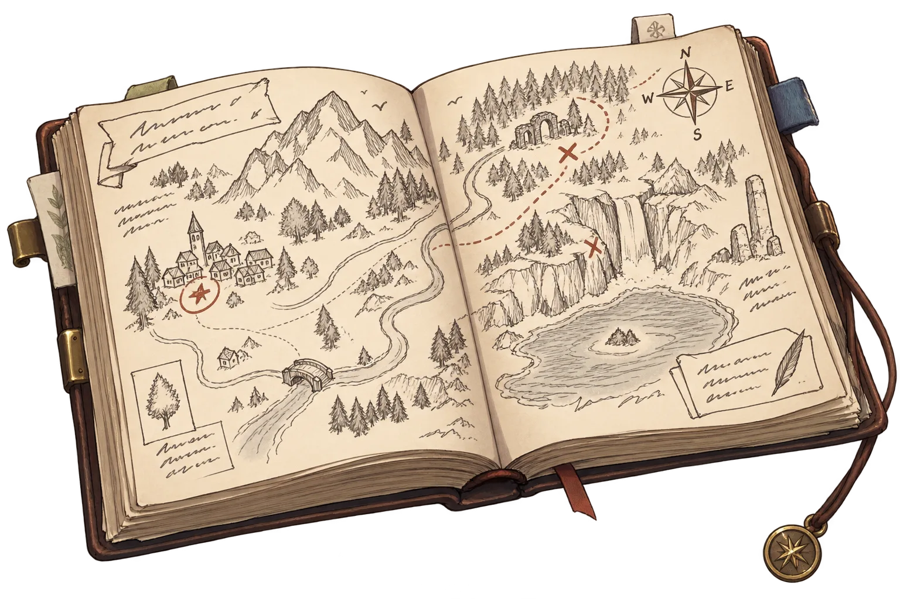

大陸曆 1908年6月
13
日
11:00
航行距離
0
リーグ
北

免戰
降 落
×1
✕ 關閉
★ 已發現
✎ 地圖編輯
拖曳平移 · 滾輪／雙指縮放 · 放大可見市鎮街廓
✋ 平移
⛰ 山
⛏ 挖
▬ 平
✽ 自動修正
〜 水
◎ 湖
≈ 河
▦ 貼材
＝ 鐵路
— 公路
⌫ 擦除
⌖ 移城
🗑 刪除
大小
18
力道
45
↶ 復原
◱ 圖層
⇩ 匯出
✕ 關閉
鏟平高度
帝都高
—
取游標下的高度
取消（還原）
確定
中鍵按住＝平移（任何筆都行）· 滾輪／雙指縮放
畫筆：按住拖曳 · 每一次改變都要確認
0%
SAINT INSTALL